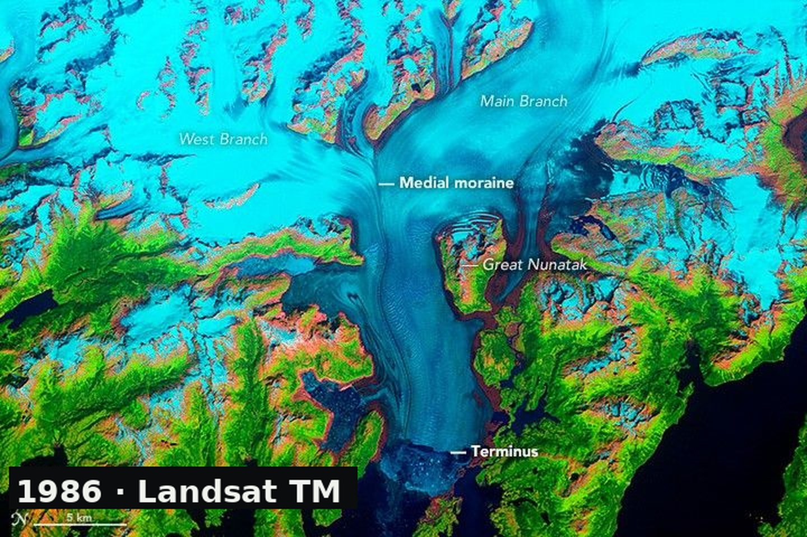
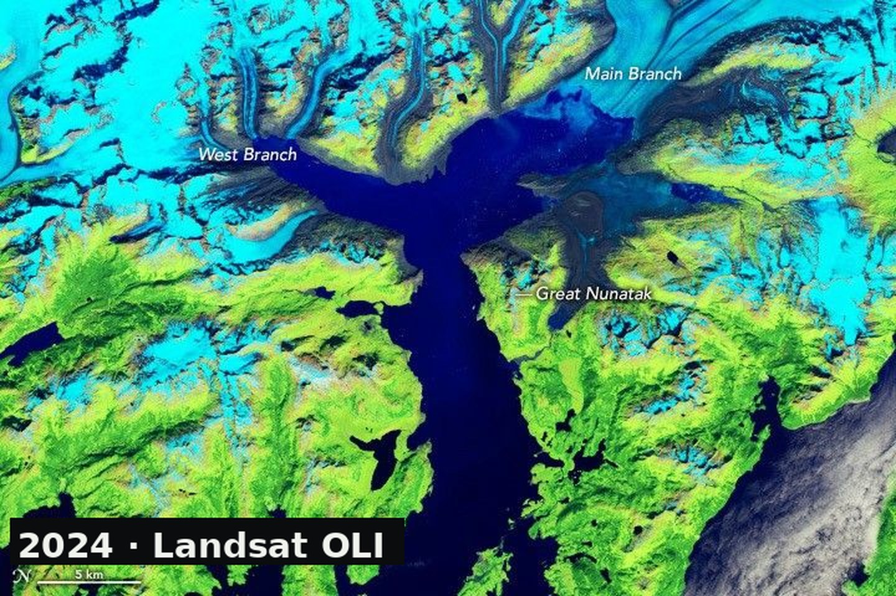
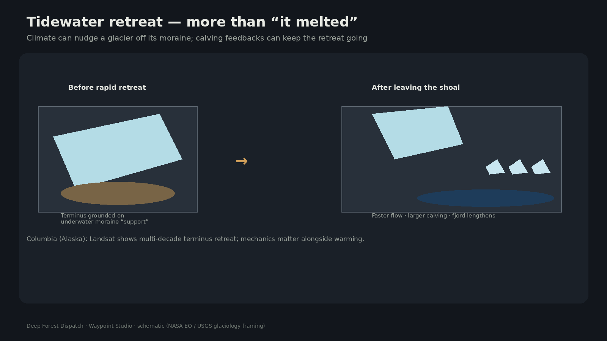

Same fjord, different decade
Columbia Glacier descends from the Chugach into a fjord that opens toward Prince William Sound. NASA’s World of Change series holds the geometry steady while Landsat sensors change underneath — Thematic Mapper to OLI — so the terminus can be compared honestly.


Since the 1980s the Main Branch has retreated more than 20 kilometers, with more than half of thickness and volume lost. Pace is uneven: constrictions and pinning points can stall the front for years before retreat resumes.
Why “it warmed” is incomplete
A tidewater glacier ends in the sea. For decades Columbia’s front was braced by an underwater moraine shoal — sediment piled at the terminus like a submerged bumper. Around 1980 the glacier retreated off that support. Flow and calving accelerated. Climate change likely helped deliver the initial nudge; mechanical feedbacks kept the disintegration going.

What the images keep teaching
As the glacier thinned, trimlines of freshly exposed rock widened. Parts of the front floated in deep water, changing calving style. By about 2011 the West and Main branches had effectively split into two calving fronts. Later years show pinning-point losses and continued Main Branch retreat.
When Columbia’s front reaches more stable shoreline geometry, calving should slow and a new moraine can begin to rebuild. Until then, the fjord keeps the receipt: nearly four decades of satellites watching ice trade places with open water.